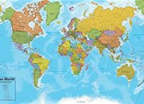
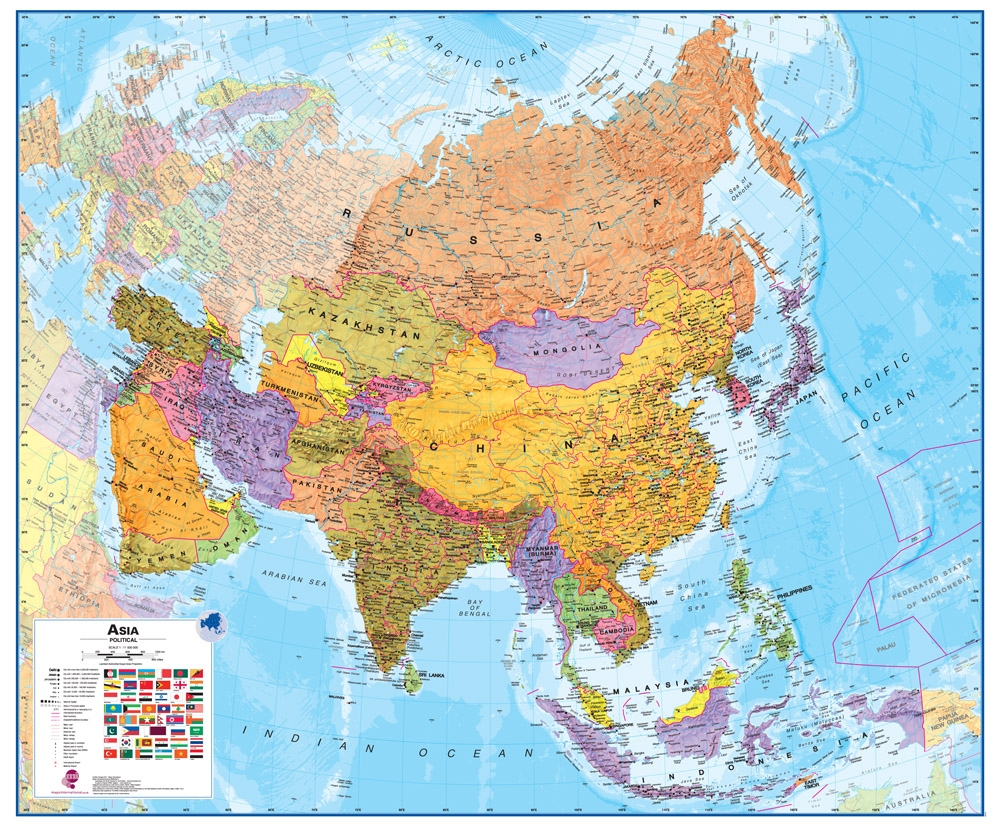

The Arab states of the Persian Gulf are the seven Arab states which border the Persian Gulf, namely Bahrain, Kuwait, Iraq, Oman, Qatar, Saudi Arabia and the United Arab Emirates (UAE).[1][2][3] All of these nations except Iraq are part of the Gulf Cooperation Council (GCC),[4] and prefer to use the term "Arabian Gulf" rather than the historical name of the Persian Gulf.[5]

Explore Saudi Arabia Using Google Earth: Explore Saudi Arabia Using Google Earth: Google Earth is a free program from Google that allows you to explore satellite images showing the cities and landscapes of Saudi Arabia and all of Asia in fantastic detail. It works on your desktop computer, tablet, or mobile phone. The images in many areas are detailed enough that you can see houses, vehicles and even people on a city street. Google Earth is free and easy-to-use.

Saudi Arabia on a World Wall Map: Saudi Arabia is one of nearly 200 countries illustrated on our Blue Ocean Laminated Map of the World. This map shows a combination of political and physical features. It includes country boundaries, major cities, major mountains in shaded relief, ocean depth in blue color gradient, along with many other features. This is a great map for students, schools, offices and anywhere that a nice map of the world is needed for education, display or decor.

Saudi Arabia On a Large Wall Map of Asia:If you are interested in Saudi Arabia and the geography of Asia our large laminated map of Asia might be just what you need. It is a large political map of Asia that also shows many of the continent's physical features in color or shaded relief. Major lakes, rivers,cities, roads, country boundaries, coastlines and surrounding islands are all shown on the map.